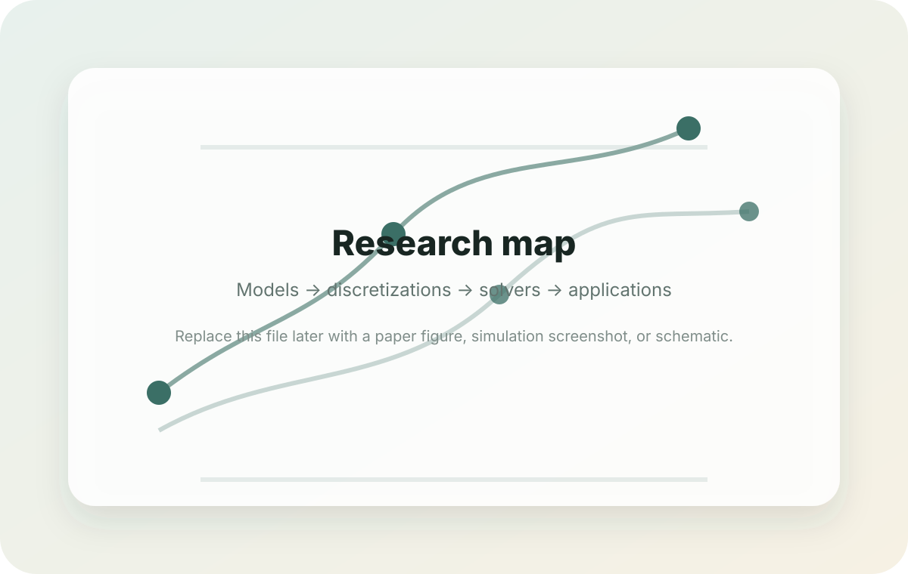

Model the coupled physics
Fractured porous media, contact/friction at matrix–fracture interfaces, non-isothermal Darcy flow, thermo-poro-elasticity, and corium-concrete interaction.
I work on numerical methods for coupled mechanics, flow, and heat transfer, with a focus on fractured porous media, contact mechanics, energy-stable THM schemes, and severe-accident modelling.
My research combines rigorous discretisation design with implementation-oriented scientific computing: Virtual Element Methods, Hybrid Finite Volumes, Nitsche formulations, mixed Lagrange multiplier methods, Newton-type nonlinear solvers, and code coupling for physical applications.
The site is organised around the structure of the research itself: physical applications, mathematical models, discretisations, nonlinear solvers, and reproducible scientific code.
Fractured porous media, contact/friction at matrix–fracture interfaces, non-isothermal Darcy flow, thermo-poro-elasticity, and corium-concrete interaction.
Hybrid Finite Volumes for flow and heat, conforming FEM or VEM for mechanics, mixed formulations or Nitsche methods for contact constraints.
Fixed-point coupling accelerated by Newton–Krylov, Newton–Raphson for thermo-hydraulics, semismooth Newton and active-set logic for contact mechanics.
Fault reactivation, geothermal stimulation, CO2 storage, fractured geological reservoirs, and nuclear-safety simulations involving ablation, cracking, and heat transfer.
The presentation is designed to be easy to read for mathematicians, computational scientists, and engineering collaborators.
Polytopal schemes for contact mechanics and fractured-media models where the mesh geometry is complex and contact constraints must be handled carefully.
Discretisations that preserve energy estimates for non-isothermal flow, poromechanics, and matrix–fracture contact in mixed-dimensional settings.
Fortran research software with contact solvers, pressure-temperature coupling, fixed-stress relaxation, sparse linear algebra, and ParaView/Ensight outputs.

Research explains the scientific programme. Publications gives paper-by-paper summaries with numerical methods, physical applications, and achievements. Software documents the computational implementation and output structure.
The figure placeholders are deliberately included now so you can later add plots, meshes, solver-convergence curves, or ParaView screenshots without redesigning the layout.